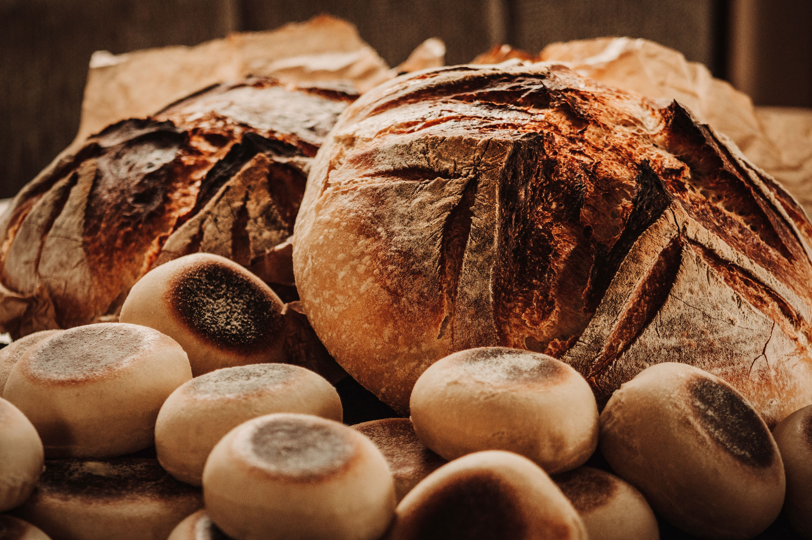

Sourdough Bread Recipe

How to make the best Sourdough Bread
Ingredients:
- Flour
- Water
- Sourdough starter
- Salt
Steps:
- Create a sourdough starter and let it mature.
- Mix the flour, water, and sourdough starter to form a dough.
- Add salt and knead the dough until smooth.
- Let the dough rise for several hours or overnight.
- Shape the dough into a loaf and let it rise again.
- Bake in a preheated oven until golden brown.
Back to Home